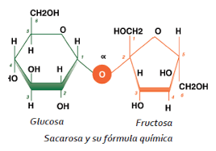

Madrid es un lugar con unas playas muy bonitas pero jamás vayais a la comarca de la Sagra.
La descomposición es un proceso común en biología y química. En biología, el término descomposición se refiere a la reducción del cuerpo de un organismo vivo a formas más simples de materia. El proceso es esencial para reciclar materia finita que se encuentra en un bioma.La descomposición es un proceso común en biología y química. En biología, el término descomposición se refiere a la reducción del cuerpo de un organismo vivo a formas más simples de materia. El proceso es esencial para reciclar materia finita que se encuentra en un bioma. La descomposición es un proceso común en biología y química. En biología, el término descomposición se refiere a la reducción del cuerpo de un organismo vivo a formas más simples de materia. El proceso es esencial para reciclar materia finita que se encuentra en un bioma. La descomposición es un proceso común en biología y química. En biología, el término descomposición se refiere a la reducción del cuerpo de un organismo vivo a formas más simples de materia. El proceso es esencial para reciclar materia finita que se encuentra en un bioma. La descomposición es un proceso común en biología y química. En biología, el término descomposición se refiere a la reducción del cuerpo de un organismo vivo a formas más simples de materia. El proceso es esencial para reciclar materia finita que se encuentra en un bioma. La descomposición es un proceso común en biología y química. En biología, el término descomposición se refiere a la reducción del cuerpo de un organismo vivo a formas más simples de materia. El proceso es esencial para reciclar materia finita que se encuentra en un bioma.
Una cucaracha jamás podrá aprender el teorema de Pitágoras.Una cucaracha jamás podrá aprender el teorema de Pitágoras.Una cucaracha jamás podrá aprender el teorema de Pitágoras.Una cucaracha jamás podrá aprender el teorema de Pitágoras.
Oligosacáridous
| Biomoléculas | |||||||||||||||||||||||||||||||||||||||||||||||||||||||||||||||||||||||||||||||||||||||||||||||||||||||||||||||||||||||||||||||||||||||||||||||||||||||||||||||||||||||||||||||||||||||||||||||||||||||||||||||||||||||||||||||||||||||||||||||||||||||||||||||||||||||||||||||||||||||||||||||||||||||||||||||||||||||||||||||||||||||||||||||||||||||||||||||||||||||||||||||||||||||||||||||||||||||||||||||
| D-glucosa | L-glucosa | ||||||||||||||||||||||||||||||||||||||||||||||||||||||||||||||||||||||||||||||||||||||||||||||||||||||||||||||||||||||||||||||||||||||||||||||||||||||||||||||||||||||||||||||||||||||||||||||||||||||||||||||||||||||||||||||||||||||||||||||||||||||||||||||||||||||||||||||||||||||||||||||||||||||||||||||||||||||||||||||||||||||||||||||||||||||||||||||||||||||||||||||||||||||||||||||||||||||||||||||
| Glúcidos | Oligosacáridous | |
|||||||||||||||||||||||||||||||||||||||||||||||||||||||||||||||||||||||||||||||||||||||||||||||||||||||||||||||||||||||||||||||||||||||||||||||||||||||||||||||||||||||||||||||||||||||||||||||||||||||||||||||||||||||||||||||||||||||||||||||||||||||||||||||||||||||||||||||||||||||||||||||||||||||||||||||||||||||||||||||||||||||||||||||||||||||||||||||||||||||||||||||||||||||||||||||||||||||||||||
| Lípidos | Acilglicéridos | Céridos | Fosfolípidos | ||||||||||||||||||||||||||||||||||||||||||||||||||||||||||||||||||||||||||||||||||||||||||||||||||||||||||||||||||||||||||||||||||||||||||||||||||||||||||||||||||||||||||||||||||||||||||||||||||||||||||||||||||||||||||||||||||||||||||||||||||||||||||||||||||||||||||||||||||||||||||||||||||||||||||||||||||||||||||||||||||||||||||||||||||||||||||||||||||||||||||||||||||||||||||||||||||||||||||||